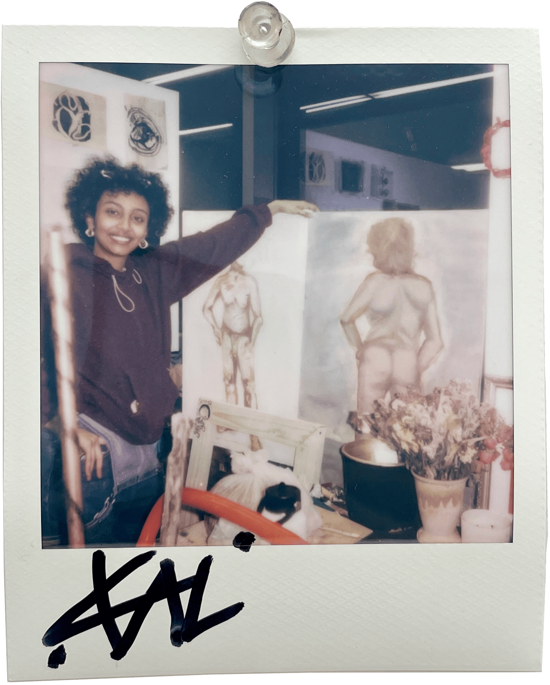

Kal Haile

“Selet tesiyalew banchi tsegur.” My hair is a work of my my mother’s prayers.
Perpetual transition, fucking around with conventional norms, and exploring messiness and relations. I work with material I feel calls to me, and what I create reflects these ways of thinking and complex interrelations between psychological, physiological, and spiritual dimensions. Hair is one of the central materials in my practice—compelling and polarizing in its nature. On the head, lustrous hair evokes attraction and beauty; when displaced and repurposed—pierced through wet clay sculptures or suspended from installations—it transforms into something simultaneously repulsive and mesmerizing. I'm drawn to this duality: how hair becomes both grotesque and captivating when removed from its original context. The individual strands- their protein structure, their cellular memory- carry personal histories while suggesting universal human experiences. Incorporating hair into my sculptures—whether tightly wound, loosely draped, or enmeshed with other materials— speaks to my need to create conflations of identity, change’s permanence, bodily autonomy, and physiological resistance.
My exploration of hair extends to its cultural significance within my Ethiopian heritage and the communities I was raised in D.C. – where intricate braiding patterns and styling techniques carry deep cultural and symbolic meaning and are highly regarded entities and forms of social currency. These practices inform my approach to intervening with hair in my work, allowing me to connect personal experience with broader narratives.
In the sink, in between your buttcrack, in your food, in your books, in a strange white lady’s hands, in your wishes– a persistent entity that has webbed its way into every pore of our existence. While assemblage forms the core of my practice, I've discovered unexpected resonance in the ways hair depicts travels and its subtle ways of curating itself. I have found the minute strands to be delicate and chaotic. I followed their direction and learned their stories until I found myself embossing and printing them. These methods offer a meditative space for reflection, which is essential to my conceptual development. Yet these two-dimensional works feel incomplete without their three-dimensional counterparts—the tactile sculptural assemblages and the contemplative depth of prints exist in necessary dialogue with each other. What they say, though, I’m not too sure.
I constantly wrestle with expressing something deeper about the transformation of the Black body, spirituality, and our relationship with nature. I fight and resist over-intellectualizing or sanitizing the rawness of what a lived experience is. My entities, above all, examine repression and the challenge of balancing chaos and order amidst the scarcity of time and the looming presence of degradation and change. The act of making, for me, remains deeply tied to uninhibited sensory exploration. I create with the understanding that internal and external forces guide my practice and should be embraced rather than restrained. I believe my work embodies a visceral response to the world, its collective knowledge, and the cultural forces that have shaped me while reaching toward transformative potentials.
Tsegurachen wubachen nw… gen asakayi mehonu aykerim. Hair shapes us and our interrelationships, I just wanted to know how to build a visual language for it to reach.